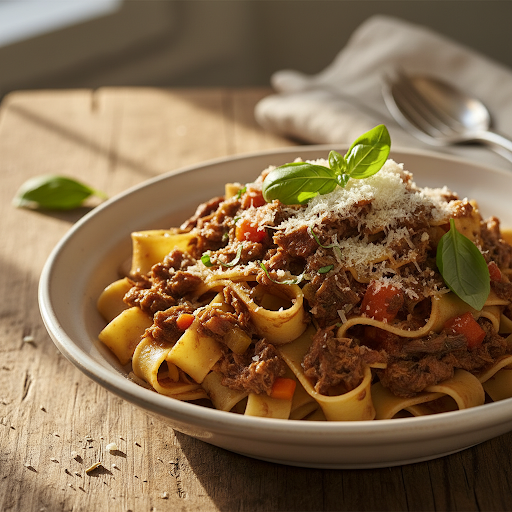
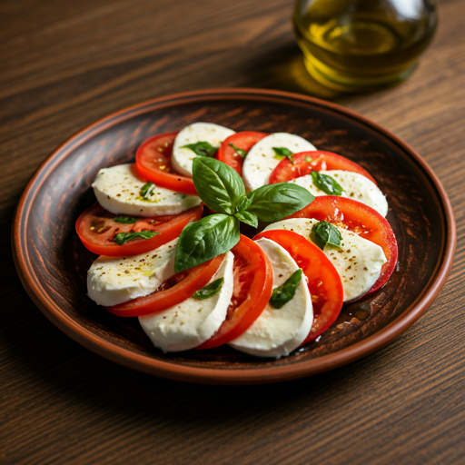
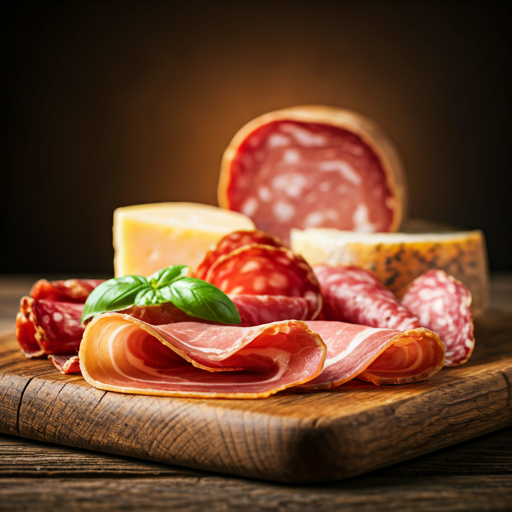
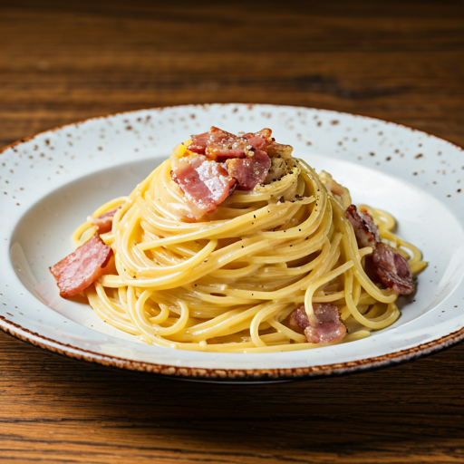
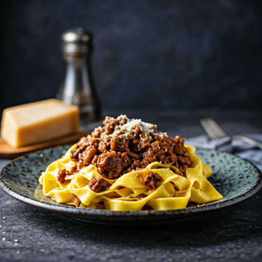
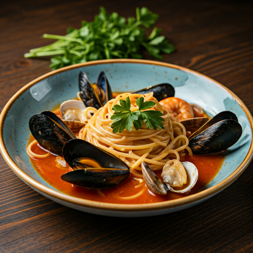
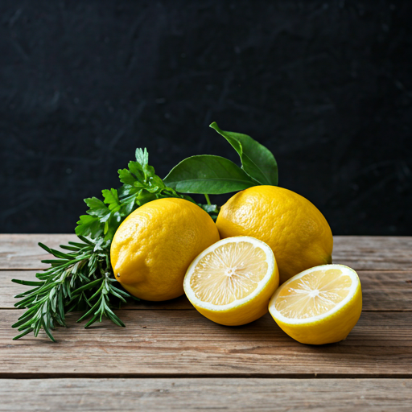

手打ちパパルデッレ
トスカーナ地方の伝統的な幅広パスタ。毎朝、職人が手作業で丁寧に伸ばし、小麦の豊かな風味と独特のモチモチとした食感を生み出しています。
¥2,400前菜 Antipasto

水牛モッツァレラと完熟トマトのカプレーゼ
イタリア産水牛のモッツァレラチーズと、太陽の恵みをたっぷり浴びた完熟トマト。フレッシュなバジルと最高級オリーブオイルでシンプルに。
¥1,800
厳選生ハムとサラミの盛り合わせ
パルマ産プロシュート、ミラノサラミなど、熟成された旨味が凝縮された肉の盛り合わせ。ワインのお供に最適です。
¥2,200パスタ Primo Piatto

本場ローマのカルボナーラ
¥1,900生クリームを一切使わず、卵黄とペコリーノ・ロマーノチーズ、グアンチャーレのみで作る濃厚な一皿。

新鮮な海の幸のペスカトーレ
¥2,600ムール貝、アサリ、エビ、イカなど、たっぷりの魚介の旨味が溶け込んだトマトソース。

手打ちパパルデッレ イノシシのラグー
¥2,400トスカーナの森の恵み。赤ワインと香味野菜でじっくり煮込んだイノシシ肉の力強いラグーソースを、自慢の手打ちパスタで。
メイン Secondo Piatto

ビステッカ・アッラ・フィオレンティーナ
フィレンツェ名物のTボーンステーキ。最高級の骨付き肉を、外はカリッと、中はレアに炭火で豪快に焼き上げます。
※焼き上がりに40分ほどお時間をいただきます。
デザート Dolce
クラシック・ティラミス
エスプレッソをたっぷり染み込ませたサヴォイアルディと濃厚マスカルポーネ。
¥900パンナコッタ
滑らかな口溶けのミルクプリン。季節のフルーツソースを添えて。
¥800アフォガート
冷たいバニラジェラートに、熱々の濃厚エスプレッソをかけて。
¥850本日のジェラート
旬の素材を使った自家製ジェラート。スタッフにお尋ねください。
¥700